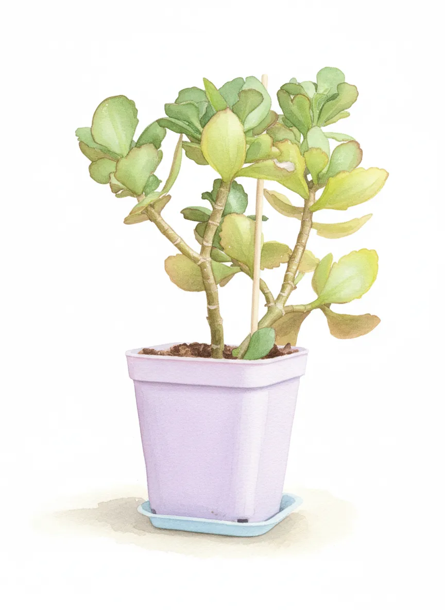
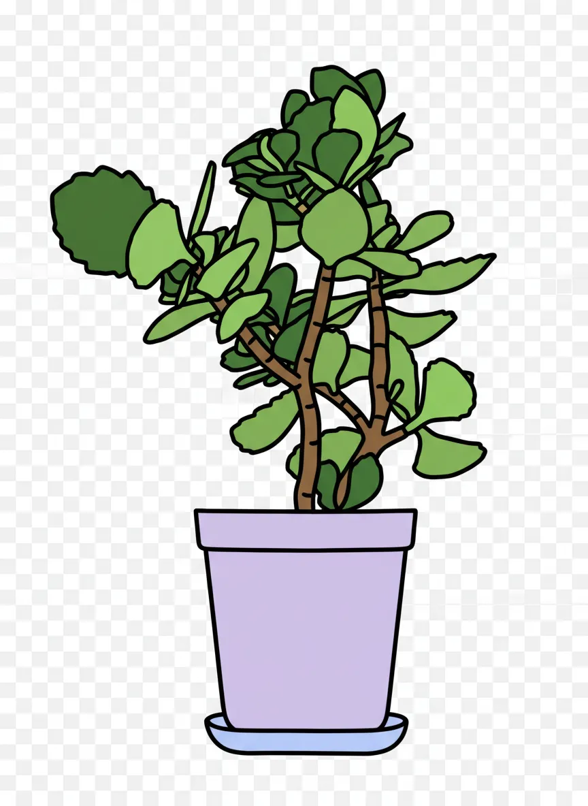
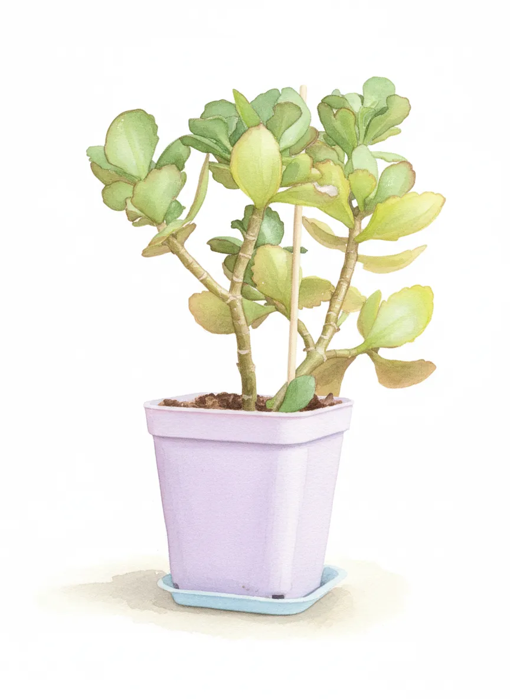
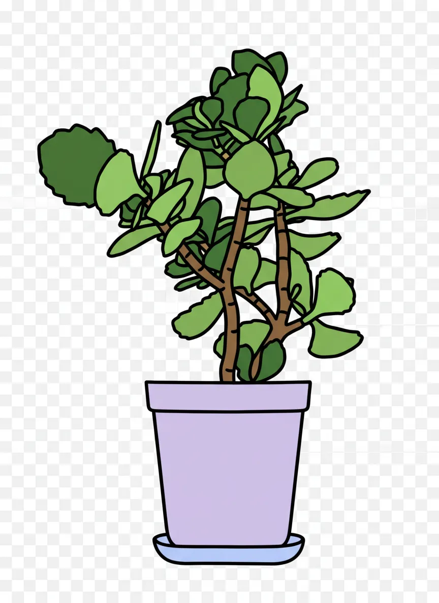

Keanu Leaves


 



Plant Mood
I'm Keanu Leaves, and yeah, I know what you're thinking. Another Hollywood plant, all looks, no substance. But trust me, I've got layers. Like an onion, or a particularly complex action sequence. They say I tend to 'grow quickly in all directions' and 'climb over pots.' Call it ambition. Call it a desperate need for more screen time. Just don't call me basic. I'm too busy transcending genres, one leaf at a time.
Plant Details
| Custom Name | Keanu Leaves |
| Scientific Name | Kalanchoe blossfeldiana |
| Health | Good |
| Size | 15 |
| Environment | Livingroom window |
| Has Grow Light | Unknown |
| Pot Type | potPlastic |
| Pot Soil | coconutCoirOrPeat |
| Pot Size | 5 |
| Has Drainage | Yes |
Care Schedule
| Action | Last Done | Next Due |
|---|---|---|
| Watering | ||
| Fertilizing | ||
| Repotting | ||
| Cleaning | - | - |
| Progress Update | ||
| Misting | - | - |